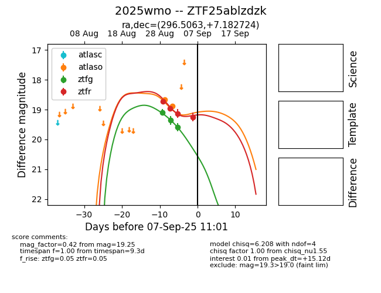

FINK: ZTF25ablzdzk
Lasair: ZTF25ablzdzk
ALeRCE: ZTF25ablzdzk
TNS: 2025wmo
YSE: 2025wmo
ZTF25ablzdzk (ztf,fink)
2025wmo (tns,yse)
equatorial (ra, dec) = (296.5063,+7.18272)
galactic (l, b) = (45.6737,-8.70338)

last atlaso=18.89, ztfg=19.59, ztfr=19.57
2 atlaso, 3 ztfg, 5 ztfr detections